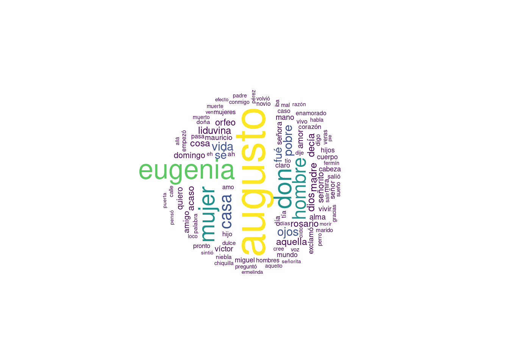
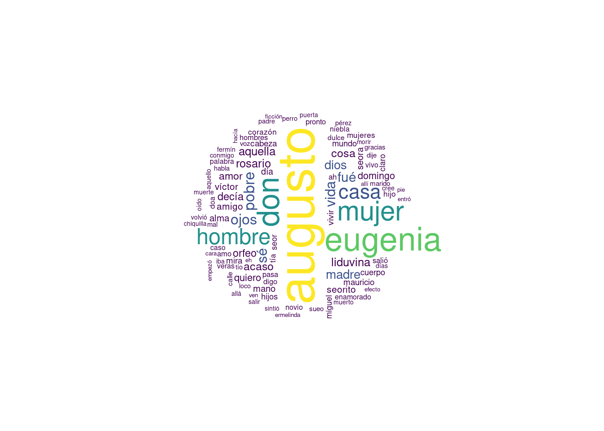

library(stringr) # Paquete para el procesamiento de texto
library(wordcloud) # Paquete para generar el gráfico de nube de palabras
library(viridis) # Paquete para utilizar paletas de colores
contador = function(texto, metodo = 2){ # Función para determinar las frecuencias de las palabras en el texto
# texto = "sd sd sdasdasd "
if(metodo == 1){ # Método que utilizar el paquete "stringr"
texto = tolower(texto) # Convierte todo en letras minúsculas
texto = unlist(stringr::str_extract_all(texto, boundary("word")))
# La función "stringr::str_extract_all(texto, boundary("word"))" Extrae las palabras del texto y
# las organiza en un lista. Luego, la función "unlist" las organiza en un vector
} else{ # Método que utiliza la construcción manual
texto = tolower(texto) # Convierte todo en letras minúsculas
texto = strsplit(texto, "") # Separa las palabras del texto generando una lista, en donde cada casillas contiene
# los caracteres de cada palabras separados
# (aun no se eliminan los elementos que no sean letras)
texto = lapply(texto, function(x){ # Función para eliminar todo aquello que no sea letra
x = gsub("-", " ", x) # Reemplazamos los guiones por espacios con el fin de no generar palabras "pegadas"
# Ejemplo: super-hombre = superhombre
x = x[x %in% c(letters, " ", "á", "é", "í", "ó", "ú", "ü")] # Elimina todo aquellos caracteres que no sean letras,
# además de los espacios, diéresis y vocales con tildes.
x = paste0(x, collapse = "") # Unificamos nuevamente los caracteres en cada una de las casillas de la lista para
# generar las palabras
return(x) # Retornamos el texto completo en un solo "string" (va dentro de una lista de una casilla)
})
texto = unlist(texto) # Transformamos la lista a vector
texto = unlist(strsplit(texto, " ")) # Separamos el texto por espacios, y los dejamos como vectos
texto = texto[texto != ""] # Eliminamos el exceso de espacios
# Ahora tenemos todas las palabras del texto por separado
}
unicas = unique(texto) # Obtenemos las palabras distintas presentes en el texto
conteo = apply(as.matrix(unicas), 1, FUN = function(y){return(sum(texto == y))}) # Una tabla de frecuencia sencilla
df = data.frame("Palabra" = unicas, "Frecuencia" = conteo) # Los dejamos como "data frame"
swords = read.table("https://raw.githubusercontent.com/Alir3z4/stop-words/master/spanish.txt", encoding = "UTF-8") # Stopwords
# Utilizamos un repositorio de github que tiene un listado de Stopwords
df = df[!(df$Palabra %in% swords[,1]),] # Eliminamos los stopwords de la tabla de frecuencias
return(df)
}
palabras = readLines("https://www.gutenberg.org/files/49836/49836-0.txt", encoding = "UTF-8") # Texto extraído de una página
palabras = palabras[92:8317] # Seleccionamos la sección que corresponde a texto de discurso (solo a modo de ejemplo)
palabras = paste0(palabras, collapse = " ") # Pegamos todas las palabras para dejar todo dentro de un "string"
w1 = contador(palabras, 1) # Generamos la tabla de frecuencias con el método que utiliza el paquete "stringr"
w2 = contador(palabras, 2) # Generamos la tabla de frecuencias con el método manual
# Graficamos ambas nubes
par(mfrow = c(1,1))
wordcloud(w1[,1], w1[,2], min.freq = 20, random.order = F, max.words = 100, scale = c(3.5,0.2),
colors = viridis(5), rot.per = 0.35)
wordcloud(w2[,1], w2[,2], min.freq = 20, random.order = F, max.words = 100, scale = c(3.5,0.2),
colors = viridis(5), rot.per = 0.2)